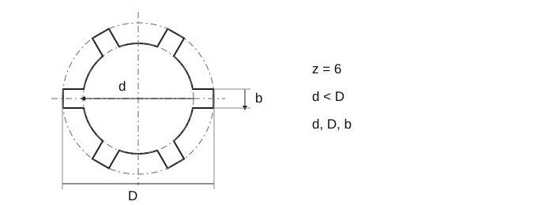

Rugosité des cannelures et clavettes
Source historique: les séries et valeurs originales ne sont pas des exigences vérifiées de l’ISO actuelle.

Rugosité des cannelures et clavettes · 1–4
| Surface | Ra [µm] |
|---|---|
| Flancs des dents et rainures | 3,2–0,8 |
| Petit diamètre, centrage intérieur | 0,8–0,4 |
| Petit diamètre, centrage sur flancs | 12,5–6,3 |
| Grand diamètre non centré | 12,5–6,3 |